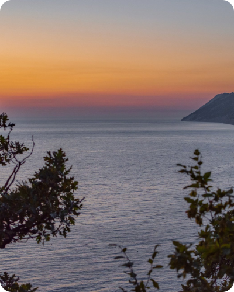

открываем новые маршруты
НА СВОИХ ДВОИХ
Цифровая платформа для поиска
пеших троп на территории России
пеших троп на территории России
Найти тропу
1
2
3
4
5
открой карту
исследуй территорию
изучи маршрут
скачай трек
отправляйся в путешествие
Уже на
платформе
платформе
троп
нац. парков
заповедника
8
5
2

Софийские озёра
 5 км 2-3 ч
5 км 2-3 ч Софийские озёра в Архызе — сложный, но очень красивый и посещаемый маршрут. Сюда можно добраться в рамках однодневной экскурсии, но лучше...
Новые тропы
Тропой императоров
Р. Дагестан
5 км
 2-3 ч
2-3 ч
2-3 ч
Узнать больше >
Большой Тхач
Р. Адыгея
55 км
5-7 д
5-7 д
Узнать больше >

Старая дорога
Краснодарский край
2.4 км
2-3 ч
2-3 ч
Узнать больше >
Кругозор
Аишха
Аишха
Краснодарский край
5 км
1 д
1 д
Узнать больше >
Больше троп >
Перейти к карте
Заповедники и национальные парки
ФГБУ Сочинский национальный парк
Краснодарский край
2 маршрута
Узнать больше >

Государственный природный заповедник "Утриш"
Краснодарский край
1 маршрут
Узнать больше >

Национальный парк "Большой Тхач"
Р. Адыгея
1 маршрут
Узнать больше >

ФГБУ “Тебердинский национальный парк”
Карачаево-Черкесская Р.
12 маршрутов
Узнать больше >

Куратинское ущелье
Р. Северная Осетия - Алания
6 маршрутов
Узнать больше >

Больше объектов ООПТ
Посмотреть все >